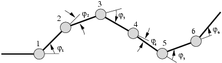
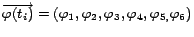
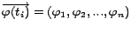
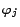
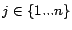
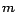
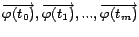

Next: 1 Cálculo del vector Up: Evaluación de un Algoritmo Previous: 2 El robot ápodo


Next: 1 Cálculo
del vector Up: Evaluación
de un Algoritmo Previous: 2
El robot ápodo
Se emplea un modelo de propagación de ondas para los cálculos, construyéndose las tablas de control de movimiento (gait control tables) a partir de los parámetros de la onda: amplitud, forma de la onda, longitud de onda y frecuencia. Estas tablas almacenan la posición de las articulaciones en los diferentes instantes. Cada fila de la tabla contiene la posición instantánea de las articulaciones y determina, por tanto, la forma del robot en ese instante. La matriz completa especifica la evolución en el tiempo de la forma que va adoptando el robot.
Sólo un subconjunto de todas las matrices posibles hacen que el robot se desplace. Mediante el algoritmo de locomoción, se generan tablas de control correctas, que permiten que el robot se mueva hacia adelante y hacia atrás.
|
 |
Figure
2: Vector de posición angular en
el instante
 para un robot compuesto por 6 articulaciones:
para un robot compuesto por 6 articulaciones:
La forma del robot en un instante
 está determinada por su vector de posición angular
está determinada por su vector de posición angular

, donde
con
, es el ángulo entre los dos segmentos de la articulaciónLa figura 2
muestra un robot de seis articulaciones y su vector de posición
angular para el instante
 .
La tabla de control es una matriz de
.
La tabla de control es una matriz de

x
y es el número total de instantes en la evolución del movimiento. El valor de depende de la resolución de tiempo necesaria para la aplicación. Un valor típico, usado en los experimentos de este artículo es de 20 (el movimiento del robot se describe con 20 instantes).El algoritmo tiene dos partes. En la primera se
calcula
 a partir de la onda y en la segunda se crea la tabla.
a partir de la onda y en la segunda se crea la tabla.


Next: 1 Cálculo
del vector Up: Evaluación
de un Algoritmo Previous: 2
El robot ápodo